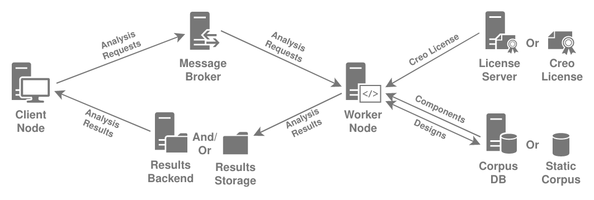
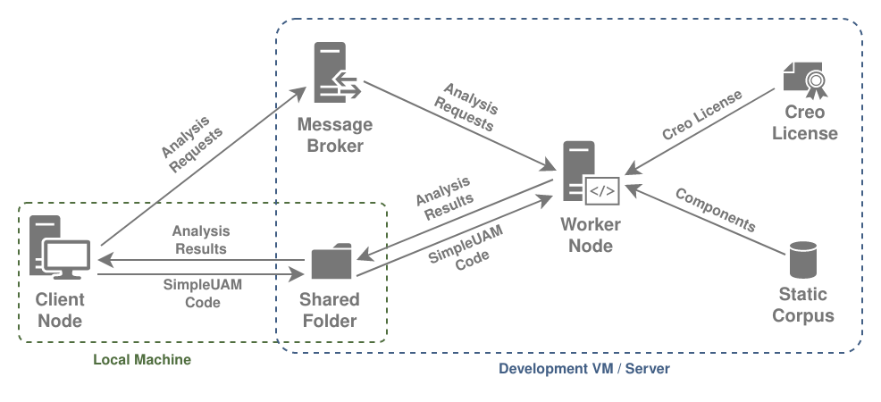
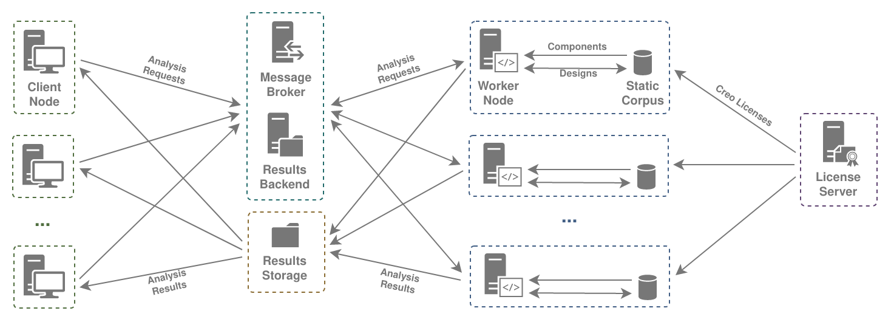

SimpleUAM Installation Guide¶
Info
We would appreciate assistance in making this guide better. Any notes on issues with the install process, lack of clarity in wording, or other improvements would be appreciated.

The core goal of SimpleUAM is allow users to set up a service for processing requests to analyze UAM and UAV designs. Client nodes, such as optimizers or search tools, should be able to queue requests for distribution to worker nodes as they become available. The results of those analyses, packaged as zip files, should then be made available to the clients as they're completed.
The key components of a SimpleUAM deployment are:
- Client Nodes: These make requests to analyze designs and retrieve analysis results once they finish. Client nodes will usually be running some optimization or search process.
- Message Brokers: These gather analysis requests from client nodes and distribute them to free worker nodes.
- Worker Nodes: These will perform analyses on designs and store the results somewhere accessible to the clients.
- License Management: Each worker node needs Creo to perform analysis, and
a license for Creo must be made available somehow.
- License Server: These can provide licenses to a number of worker nodes at once if provided with a floating license.
- Node-Locked Creo License: This is a worker-specific, static license file that can be placed on a worker.
- Component Corpus: A corpus of component information that every
worker needs in order to analyze designs.
- Corpus DB: A graph database that the worker can use to look up component information.
- Static Corpus: A static file containing a dump of the component corpus which is placed on each worker node.
- Results Storage: A file system, accessible to both worker nodes and clients, where analysis results (in individual zip files) are placed.
- Results Backends: These notify client nodes when their analysis requests are completed and where the output is in Results Storage.
In order to form a complete SimpleUAM deployment some core requirements need to be met:
- There must be one, and only one, message broker.
- The broker must be accessible over the network to all worker and client nodes.
- There needs to be at least one configured, running worker node to run analyses.
- Each worker node needs to have a Creo license, either through a node-locked license or a connection to a Creo license server.
- Each worker node needs to have access to a component corpus, either through an initialized corpus DB or a static corpus file.
- There must be a results storage accessible to all the worker and client nodes.
- The results storage should be a directory where workers can place files which are then made accessible to all the clients,
- Generally these are network file share or some local folders with automatic synchronization mechanism like rsync+cron or Dropbox.
- In order for clients to receive analysis completion notifications there must
be a single, unique results backend.
- This backend must be accessible over the network to all worker nodes and any client that wants to receive notifications.
- Note that a results backend is optional and simply polling the results storage is perfectly viable.
With a SimpleUAM deployment meeting those requirements, a client nodes can offload analysis jobs to a pool of workers though simple python and command line interfaces.
Choosing a Service Topology¶
It's possible to distribute SimpleUAM components between multiple machines in numerous ways that meet the given requirements. Picking a topology, specifically the components that go on each individual machine, tells you which installation steps are needed for that machine.
We'll look at two example topologies, one I use for (semi)local development work and one for a potential production system.

This development setup has a local machine and a single worker. The local machine is set up so it can run a SimpleUAM client and so that any code shared with a worker node can be edited in whatever manner the user is comfortable with. The worker node, running in a VM, then has all the other necessary components of the service, including broker, license, and corpus.
The structure is a broad guideline and can be tweaked as needed. For instance, if you're running windows you can just run all the components on your local machine and use a stub message broker that will run analysis requests as blocking calls. Alternately, the worker node can be running on a server somewhere with a NFS shared drive acting as the shared folder.

The production service has significantly more going on. There are one or more clients producing analysis requests, multiple workers processing them, a Creo license server, a message broker, a results backend, and results storage.
This setup can scale relatively easily while providing features like completion notifications. In fact this is the intended topology for the AWS instructions, with clients either accessing the other components via a VPN or simply running directly on the cloud.
Other topologies are also viable, for instance running a central graph database for all the workers to share instead of relying on a local, static corpus.
The most important part of choosing a service topology is knowing what component(s) are going to be running on each individual server or VM. Given that one can just go through the instructions for each component on a machine in sequence, repeating that process for each machine in the deployment.
Command Line Interfaces¶
All the command line scripts SimpleUAM provides are made using Invoke and evaluated within a PDM administered python environment.
This means that all the SimpleUAM provided commands must be run from
<repo-root> and have this format:
All the core SimpleUAM commands suam-config, setup-win, craidl,
d2c-workspace, and d2c-client will print a help message when run without
arguments.
In their base form these commands are safe and will never make change to your
system.
The help messages also provide a list of subcommands that do perform
various tasks.
These subcommands are run with:
All of these subcommands come with detailed help information that can be accessed with:
These help messages are worth checking for available options and notes.
Configuration¶
SimpleUAM uses an internal configuration system based on OmegaConf. It reads YAML files in a platform specific directory for settings that are used throughout the system. While you can find a more detailed breakdown of the system here, this is a quick overview.
Configuration File Directory¶
Once the SimpleUAM project is installed (in General Setup) you can run the following command to find the config file directory:
Files placed there will be loaded when most SimpleUAM code is started up. The configuration is immutable for the runtime of a program and changes will require a restart to register.
Configuration State¶
You can get a printout of the current configuration state with the following:
Sample Output of pdm run suam-config print --all
### paths.conf.yaml ###
config_directory: /etc/xdg/xdg-budgie-desktop/SimpleUAM/config
cache_directory: /usr/share/budgie-desktop/SimpleUAM/cache
log_directory: /home/rkr/.cache/SimpleUAM/log
work_directory: /usr/share/budgie-desktop/SimpleUAM
data_directory: /usr/share/budgie-desktop/SimpleUAM/data
### auth.conf.yaml ###
isis_user: null
isis_token: null
### win_setup.conf.yaml ###
global_dep_packages:
- checksum
- wget
- 7zip
broker_dep_packages:
- rabbitmq
worker_dep_packages:
- openjdk11
- rsync
- nssm
worker_pip_packages:
- psutil
- parea
- numpy
license_dep_packages: []
graph_dep_packages:
- openjdk11
- nssm
qol_packages:
- firefox
- notepadplusplus
- foxitreader
- tess
- freecad
### craidl.conf.yaml ###
example_dir: ${path:data_directory}/craidl_examples
stub_server:
cache_dir: ${path:cache_directory}/corpus_stub_cache
server_dir: ${path:data_directory}/corpus_stub_server
graphml_corpus: ${path:data_directory}/corpus_stub.graphml
host: localhost
port: 8182
read_only: false
service:
priority: NORMAL
exit_action: Restart
restart_throttle: 5000
restart_delay: 1000
redirect_io: false
stdout_file: ${path:log_directory}/craidl_stub_db/stdout.log
stderr_file: ${path:log_directory}/craidl_stub_db/stderr.log
rotate_io: true
auto_start: false
console: true
interactive: false
server_host: localhost
server_port: ${stub_server.port}
static_corpus: ${path:data_directory}/corpus_static_dump.json
static_corpus_cache: ${path:cache_directory}/static_corpus_cache
use_static_corpus: true
### corpus.conf.yaml ###
trinity:
repo: https://git.isis.vanderbilt.edu/SwRI/ta1/sri-ta1/trinity-craidl.git
branch: main
examples_dir: examples
graphml_corpus:
repo: https://git.isis.vanderbilt.edu/SwRI/athens-uav-workflows.git
branch: uam_corpus
graphml_file: ExportedGraphML/all_schema_uam.graphml
creopyson:
repo: https://git.isis.vanderbilt.edu/SwRI/creoson/creopyson.git
branch: main
creoson_server:
api: https://git.isis.vanderbilt.edu/api/v4/projects/499/jobs/3827/artifacts/out/CreosonServerWithSetup-2.8.0-win64.zip
manual: https://git.isis.vanderbilt.edu/SwRI/creoson/creoson-server/-/jobs/artifacts/main/raw/out/CreosonServerWithSetup-2.8.0-win64.zip?job=build-job
direct2cad:
repo: https://git.isis.vanderbilt.edu/SwRI/uam_direct2cad.git
branch: main
### d2c_workspace.conf.yaml ###
workspace_subdir_pattern: workspace_{}
reference_subdir: reference_workspace
assets_subdir: assets
locks_subdir: workspace_locks
results_dir: ${workspaces_dir}/results
results:
max_count: -1
min_staletime: 3600
metadata_file: metadata.json
log_file: log.json
workspaces_dir: ${path:work_directory}/d2c_workspaces
cache_dir: ${path:cache_directory}/d2c_workspaces
max_workspaces: 1
exclude:
- .git
result_exclude:
- .git
- workingdir/*.prt
### broker.conf.yaml ###
protocol: amqp
host: 127.0.0.1
port: 5672
db: ''
url: ${.protocol}://${.host}:${.port}${.db}
backend:
enabled: false
protocol: redis
host: 127.0.0.1
port: 6379
db: '0'
url: ${.protocol}://${.host}:${.port}/${.db}
### d2c_worker.conf.yaml ###
max_processes: ${d2c_workspace:max_workspaces}
max_threads: 1
shutdown_timeout: 600000
skip_logging: false
service:
priority: NORMAL
exit_action: Restart
restart_throttle: 5000
restart_delay: 1000
redirect_io: false
stdout_file: ${path:log_directory}/d2c_worker/stdout.log
stderr_file: ${path:log_directory}/d2c_worker/stderr.log
rotate_io: true
auto_start: false
console: true
interactive: false
If you want to see the full expanded version of the configs, with
all the interpolations
resolved, add the --resolved flag.
Sample Output of pdm run suam-config print --all --resolved
### paths.conf.yaml ###
config_directory: /etc/xdg/xdg-budgie-desktop/SimpleUAM/config
cache_directory: /usr/share/budgie-desktop/SimpleUAM/cache
log_directory: /home/rkr/.cache/SimpleUAM/log
work_directory: /usr/share/budgie-desktop/SimpleUAM
data_directory: /usr/share/budgie-desktop/SimpleUAM/data
### auth.conf.yaml ###
isis_user: null
isis_token: null
### win_setup.conf.yaml ###
global_dep_packages:
- checksum
- wget
- 7zip
broker_dep_packages:
- rabbitmq
worker_dep_packages:
- openjdk11
- rsync
- nssm
worker_pip_packages:
- psutil
- parea
- numpy
license_dep_packages: []
graph_dep_packages:
- openjdk11
- nssm
qol_packages:
- firefox
- notepadplusplus
- foxitreader
- tess
- freecad
### craidl.conf.yaml ###
example_dir: /usr/share/budgie-desktop/SimpleUAM/data/craidl_examples
stub_server:
cache_dir: /usr/share/budgie-desktop/SimpleUAM/cache/corpus_stub_cache
server_dir: /usr/share/budgie-desktop/SimpleUAM/data/corpus_stub_server
graphml_corpus: /usr/share/budgie-desktop/SimpleUAM/data/corpus_stub.graphml
host: localhost
port: 8182
read_only: false
service:
priority: NORMAL
exit_action: Restart
restart_throttle: 5000
restart_delay: 1000
redirect_io: false
stdout_file: /home/rkr/.cache/SimpleUAM/log/craidl_stub_db/stdout.log
stderr_file: /home/rkr/.cache/SimpleUAM/log/craidl_stub_db/stderr.log
rotate_io: true
auto_start: false
console: true
interactive: false
server_host: localhost
server_port: 8182
static_corpus: /usr/share/budgie-desktop/SimpleUAM/data/corpus_static_dump.json
static_corpus_cache: /usr/share/budgie-desktop/SimpleUAM/cache/static_corpus_cache
use_static_corpus: true
### corpus.conf.yaml ###
trinity:
repo: https://git.isis.vanderbilt.edu/SwRI/ta1/sri-ta1/trinity-craidl.git
branch: main
examples_dir: examples
graphml_corpus:
repo: https://git.isis.vanderbilt.edu/SwRI/athens-uav-workflows.git
branch: uam_corpus
graphml_file: ExportedGraphML/all_schema_uam.graphml
creopyson:
repo: https://git.isis.vanderbilt.edu/SwRI/creoson/creopyson.git
branch: main
creoson_server:
api: https://git.isis.vanderbilt.edu/api/v4/projects/499/jobs/3827/artifacts/out/CreosonServerWithSetup-2.8.0-win64.zip
manual: https://git.isis.vanderbilt.edu/SwRI/creoson/creoson-server/-/jobs/artifacts/main/raw/out/CreosonServerWithSetup-2.8.0-win64.zip?job=build-job
direct2cad:
repo: https://git.isis.vanderbilt.edu/SwRI/uam_direct2cad.git
branch: main
### d2c_workspace.conf.yaml ###
workspace_subdir_pattern: workspace_{}
reference_subdir: reference_workspace
assets_subdir: assets
locks_subdir: workspace_locks
results_dir: /usr/share/budgie-desktop/SimpleUAM/d2c_workspaces/results
results:
max_count: -1
min_staletime: 3600
metadata_file: metadata.json
log_file: log.json
workspaces_dir: /usr/share/budgie-desktop/SimpleUAM/d2c_workspaces
cache_dir: /usr/share/budgie-desktop/SimpleUAM/cache/d2c_workspaces
max_workspaces: 1
exclude:
- .git
result_exclude:
- .git
- workingdir/*.prt
### broker.conf.yaml ###
protocol: amqp
host: 127.0.0.1
port: 5672
db: ''
url: amqp://127.0.0.1:5672
backend:
enabled: false
protocol: redis
host: 127.0.0.1
port: 6379
db: '0'
url: redis://127.0.0.1:6379/0
### d2c_worker.conf.yaml ###
max_processes: 1
max_threads: 1
shutdown_timeout: 600000
skip_logging: false
service:
priority: NORMAL
exit_action: Restart
restart_throttle: 5000
restart_delay: 1000
redirect_io: false
stdout_file: /home/rkr/.cache/SimpleUAM/log/d2c_worker/stdout.log
stderr_file: /home/rkr/.cache/SimpleUAM/log/d2c_worker/stderr.log
rotate_io: true
auto_start: false
console: true
interactive: false
Generating Stub Config Files¶
You can also use the write subcommand to write sample config files out to
the appropriate locations.
Run the following for more info:
Installing Config Files¶
The install subcommand will symlink or copy config files from another
location into the configuration directory for you.
This is useful if you want to share config files between worker nodes or
rapidly update a deployment.
Run the following for more info:
Config File Format¶
Config files can be partial and do not need to define every possible key. Keys that are missing will just use their default values.
Overriding Configuration Fields.
Consider the following defaults for example.conf.yaml:
### example.conf.yaml defaults ###
subsection:
subfield-1: 'default'
subfield-2: 'default'
field-1: 'default'
field-2: 'default'
example.conf.yaml actually on disk:
The final loaded values for example.conf.yaml as seen by the application
would be:
When describing keys in a config file, we'll use dot notation.
Config File Dot Notation
Consider the following config file:
Thenfield-1 would have value 'fld-1' and subsection.subfield-1 would
have value 'sub-1'
Likewise, setting foo to 3 and bar.buzz to 4 would leave you
with the following file:
Further details are here...
Placeholder Conventions¶
Throughout these install instructions, but especially in the AWS setup,
we use placeholders like <this-one> to represent values that will be useful
later or which you, the user, should provide.
In either case, this information should be saved somewhere for future reference.
This guide tries to proactive about asking you to save potentially useful information. We recommend keeping a file open for this.
Example placeholder file from partway through AWS setup.
aws-vpc:
prefix: example
name: example-vpc
id: vpc-XXXXXXXXXXXXXXXXX
aws-public-subnet:
name: example-public1-XX-XXXX-XX
id: subnet-XXXXXXXXXXXXXXXXX
aws-private-subnet:
name: example-private1-XX-XXXX-XX
id: subnet-XXXXXXXXXXXXXXXXX
group:
name: example-private-group
aws-elastic-ip:
name: example-eip-XX-XXXX-XX
addr: 0.0.0.0
id: eipassoc-XXXXXXXXXXXXXXXXX
We never use this information programmatically, so use whatever format you want, but it does make it easier to keep track of what you're doing during install. This is particularly important if you are setting up multiple machines and don't want to waste time.
AWS Network Setup¶
If you are using AWS you can start with our instructions for setting up a virtual private cloud (VPC). It sets up a private subnet for non-client machines and a VPN and Network drive for access to that private subnet.
Machine Setup¶
Installation for each machine requires following the other pages in this section in order, skipping any that aren't relevant and always including general setup. Try to setup machines with centralized functions, like the license server and message broker, before the worker nodes.
- AWS (Instance) Setup
- General Setup (Required)
- Creo License Server
- Message Broker & Results Backend
- Corpus DB
- Static Corpus
- Worker Node
Client nodes are less directly dependent on the SimpleUAM infrastructure and their setup can skip directly to the corresponding section: